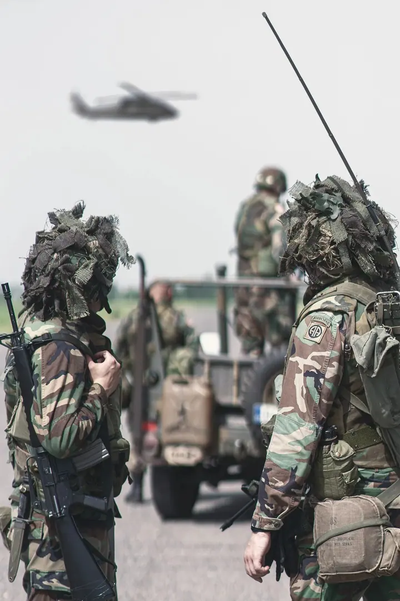
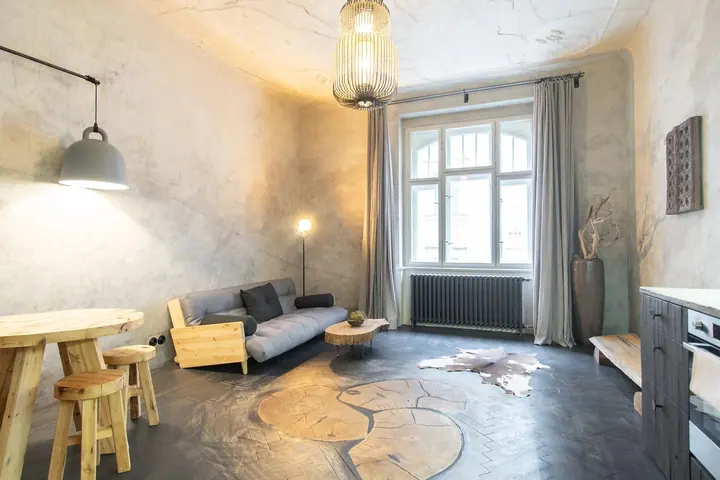
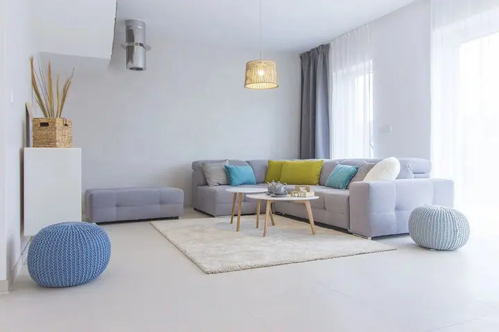

01 / 04
Focení nemovitostí
Profi fotografie v HDR kvalitě s dobrou kompozicí a pečlivým postprocesem. Odevzdávám 15–30 upravených fotek.
Zeptat se na termín→


Nemovitosti, které zaujmou na první pohled
Zeptat se na termín →(01) Ahoj
Jmenuji se Jan Bareš a na realitním trhu se pohybuji od roku 2012. Fotím a natáčím byty, domy i vily v Praze a v okolních krajích. Ke klasické fotografii a dronu dnes přidávám i AI úpravy, díky kterým i prázdný prostor ukáže, co v něm je.
(02) Co dělám
01 / 04
Profi fotografie v HDR kvalitě s dobrou kompozicí a pečlivým postprocesem. Odevzdávám 15–30 upravených fotek.
Zeptat se na termín→02 / 04
Klasické natáčení se stabilizátorem, střihem a hudbou. K tomu reálné letecké záběry z dronu, foto i video.
Zeptat se na termín→03 / 04
Vybavím prázdný prostor nábytkem v jakémkoli stylu, digitálně odstraním nepořádek nebo ze zatažené oblohy udělám slunečný den. Z fotek z mobilu připravím profesionální snímky i plynulou video prohlídku.
Zeptat se na termín→Dále nabízím
Fotím akce v pohybu a v akci, třeba historické rekonstrukce bitev, kde rozhoduje správný okamžik.
↗(04) Postup
Od první zprávy po hotovou galerii.
Krok 1 z 4
Napíšete mi, o jakou nemovitost jde a co potřebujete: fotky, video, dron nebo AI úpravy. Domluvíme rozsah a termín.
Krok 2 z 4
Přijedu na místo a nafotím interiéry i exteriér, případně natočím video prohlídku a letecké záběry.
Krok 3 z 4
Fotky upravím, video sestříhám s hudbou. Když je potřeba, přidám virtuální staging, vyklizení nebo změnu počasí.
Krok 4 z 4
Dostanete hotové podklady připravené do inzerce. AI balíček dodávám často do 48 hodin.
Klasická fotka, video a dron, s kapkou AI v postprodukci.
(05) Za objektivem
Jsem fotograf, kameraman a AI creator. Pro makléře i majitele fotím nemovitosti, natáčím video prohlídky a pořizuji letecké záběry dronem. Když potřebujete maximální kvalitu, emoce a detail, volím klasickou produkci.
Nově a v případě potřeby plně využívám sílu umělé inteligence. Vybavím prázdný byt virtuálním nábytkem, digitálně ho uklidím nebo z obyčejné fotky z mobilu udělám snímek připravený do inzerce. Často se zakázky skládají z kombinace klasického focení a natáčení, s kapkou AI v postprodukci.
Působím v Praze a ve Středočeském, Jihočeském, Libereckém a Královéhradeckém kraji. Kromě nemovitostí fotím i akce a eventy.
Jan
Jan Bareš · Realitní fotograf a kameraman
Focení nemovitosti začíná na 2 500 Kč a zahrnuje úpravu a 15–30 odevzdaných fotek. Cesta po Praze stojí 500 Kč, mimo Prahu 12 Kč/km.
Za cenu od 1 500 Kč z vašich fotek z mobilu udělám snímky v profi kvalitě, k tomu AI video z fotek, digitální úklid a letecký pohled. Hotovo bývá často do 48 hodin.
Virtual staging stojí 1 000 Kč za edit jedné fotky, cena je bez nafocení. Když objednáte i video, video záběr stagingu je zdarma.
Ano. Video nemovitosti stojí 4 000 Kč, dron k němu 2 000 Kč navíc. Půdorysy dělám od 700 Kč za 2D patro, 3D patro stojí 1 000 Kč.
(07) Kontakt
Napište pár vět o tom, co si představujete, a termín, který se vám hodí.